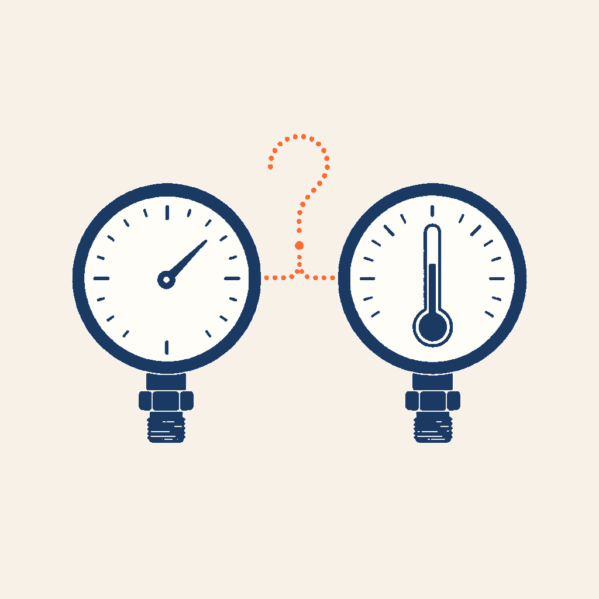
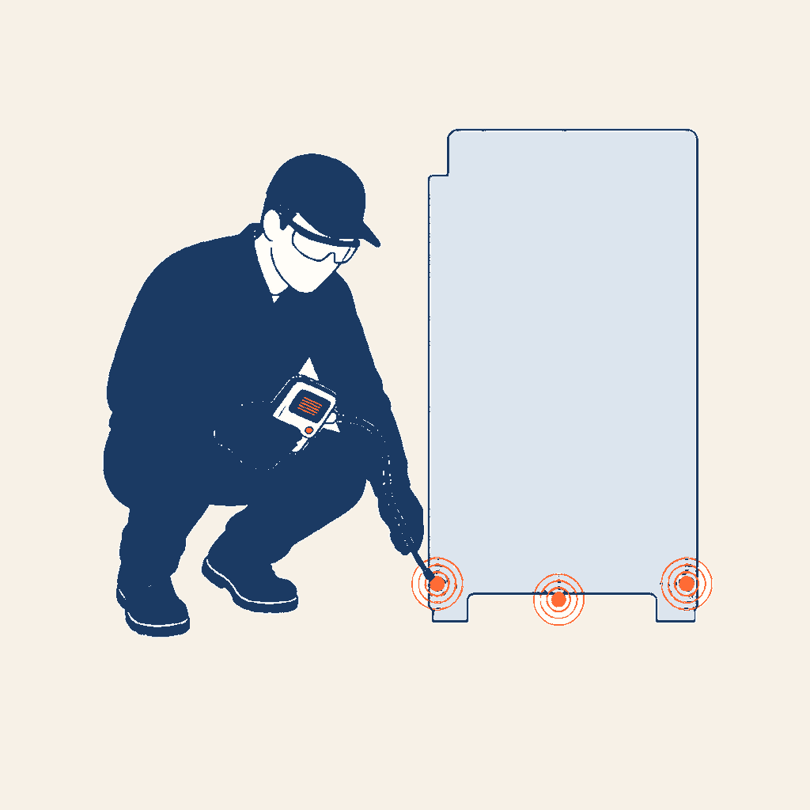
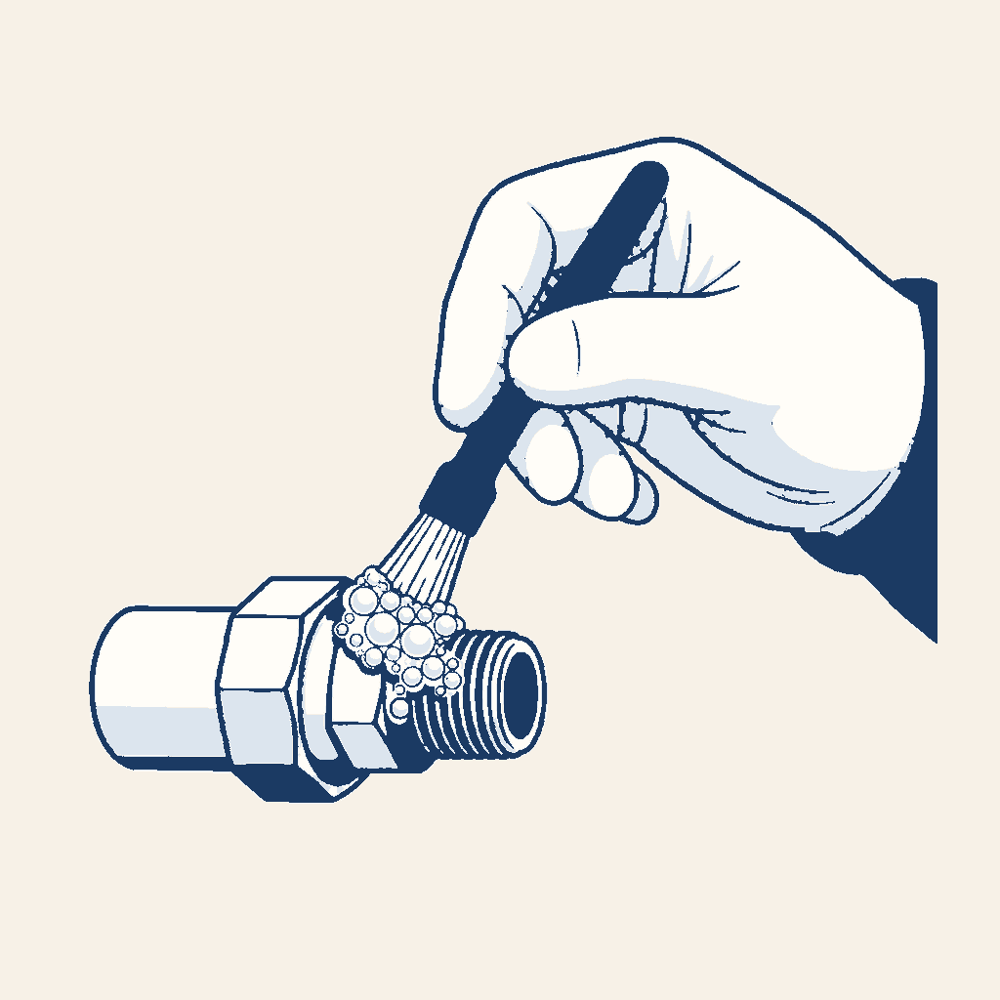

0,95×
FLUIDES · ÉTANCHÉITÉ
Les détecteurs
de fuite
Vous apprenez à choisir la méthode, à connaître les technologies de détecteur, à le contrôler et à vous en servir sans le mettre en défaut. Le produit moussant, le traceur UV et les relevés complètent le détecteur.
17 écrans · 6 dossiers · 12 exercices
Statut : en cours de relecture. Ce cours n’est pas encore validé par F. Henninot.



Point réglementaire. Deux chiffres de ce cours, 5 grammes par an et 12 mois, viennent de l’arrêté du 29 février 2016, article 2. Sur le chantier, la notice de l’appareil et la procédure de l’entreprise priment.
Sert notamment pour
- CAP IFCA — compétence C4.3
- « Contrôler l’étanchéité d’un circuit frigorifique chargé en fluide » · activité Mise en service, tâche T13 « Tirer au vide, charger et contrôler l’installation sous tension ».
- Attestation d’aptitude — arrêté du 21 novembre 2025
- 4.08 « Utiliser un dispositif électronique de détection des fuites » · 4.07 « Contrôler l’étanchéité du système au moyen d’une des méthodes directes ne nécessitant pas d’intervenir dans le circuit de réfrigération et visées au règlement (CE) n° 1516/2007 » · 4.06 « Contrôler l’étanchéité du système au moyen d’une des méthodes directes visées au règlement (CE) n° 1516/2007 ».
- En appui (le cours L’étanchéité les enseigne)
- 4.04 « Effectuer un contrôle de l’étanchéité du système au moyen d’une méthode indirecte… » · 4.05 « Utiliser des instruments de mesure portables… et interpréter les paramètres mesurés ».